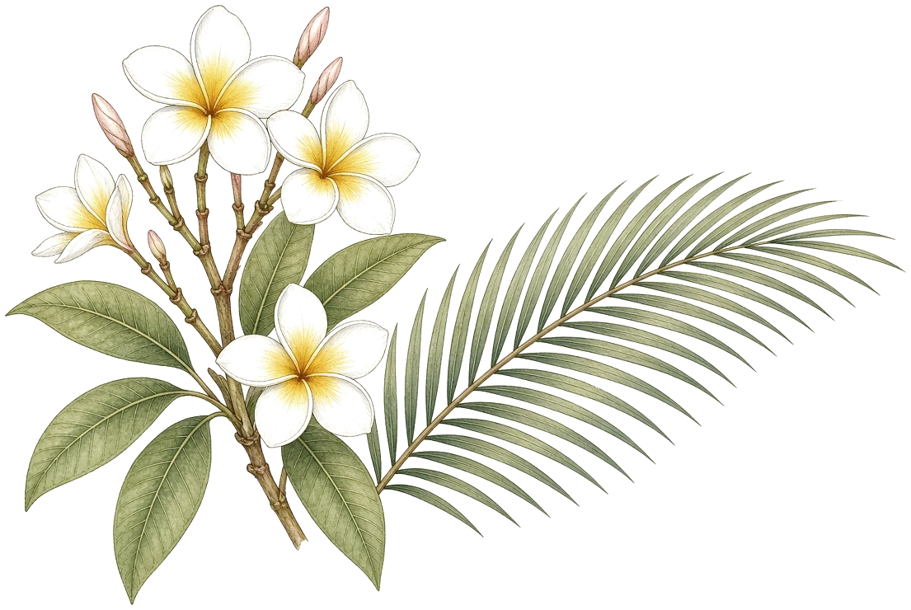
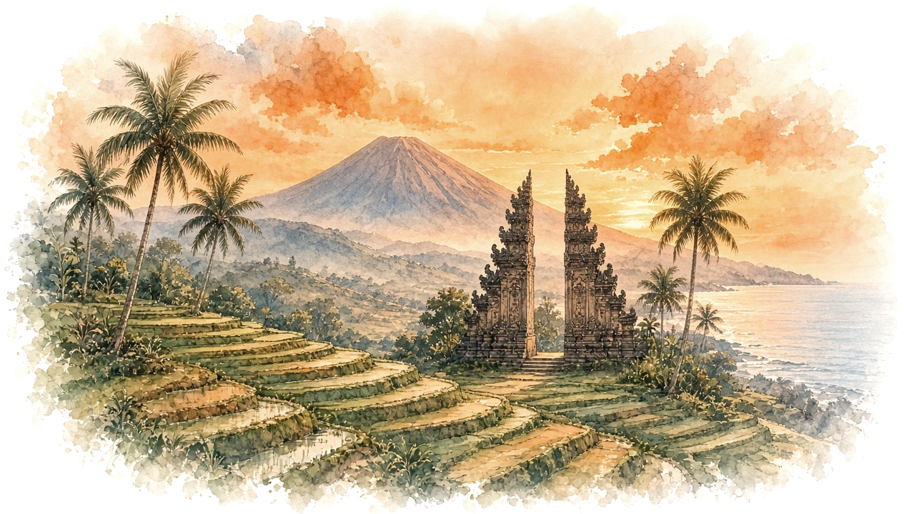
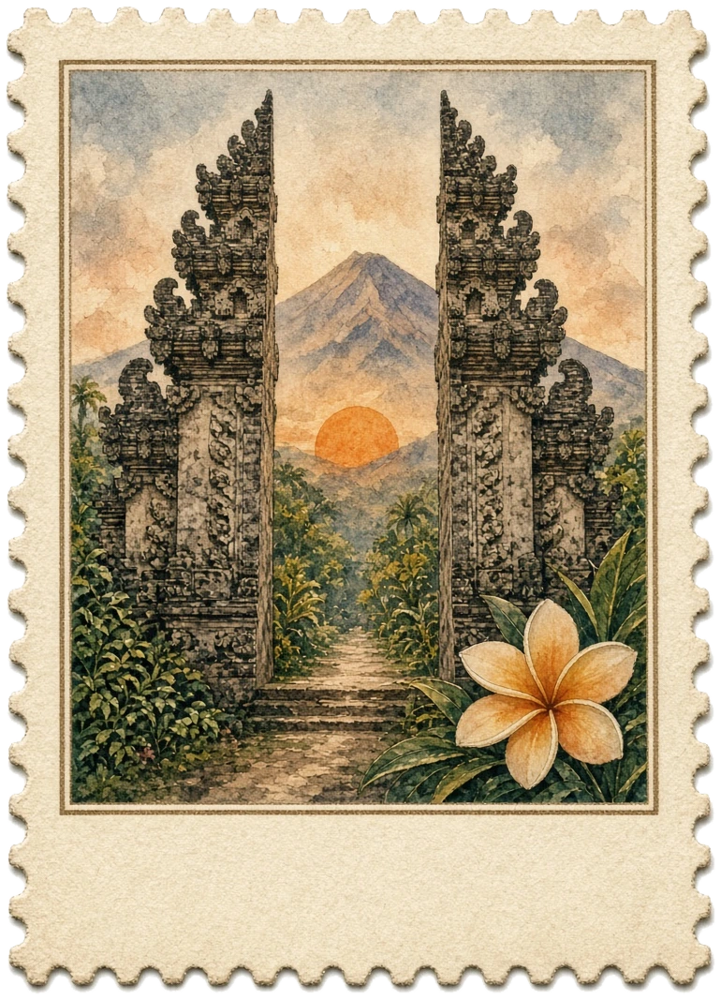
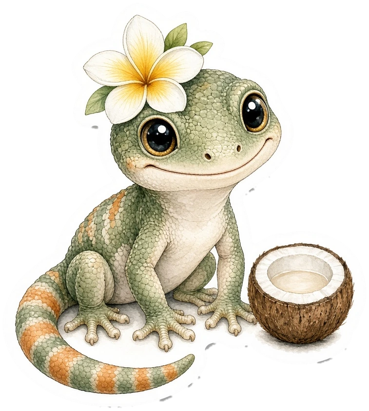

TRAVEL JOURNAL2026
— 14 —


the beach below


Steep steps, wild water, and the bluest edge of the island.

— 15 —



from the top of the stairs

INDONESIARp 5000

FIG. 04 — KELINGKING, NUSA PENIDA
· the T-rex cliff
· white sand, loud surf
· frangipani everywhere
· white sand, loud surf
· frangipani everywhere